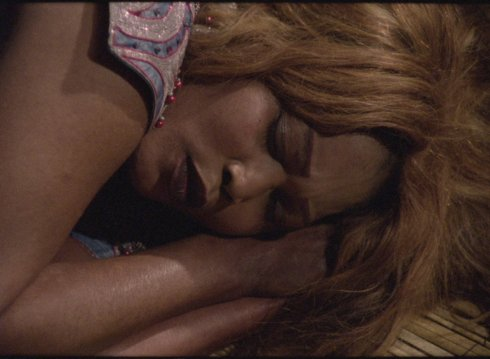

La bouche

Camilo Restrepo
|
FR 2017 B: Guillaume Mazloum und Cécile Plais – S: Camilo Restrepo – T: Fred Dabo und Mathieu Farnarier – P: Helen Olive, Martin Bertier – V: 5 à 7 films Website Camilo Restrepo
|
saturday 13 oct 10.30 pm werkstattkino
A man learns of the brutal death of his daughter by her husband. While the man sways back and forth between appeasement and revenge, the pictures and the time also break. La Bouche is a musical film, interpreted and inspired by the true story of the Guinean percussionist Mohamed Bangoura, the "Red Devil".
Camilo Restrepo born 1975, Medellín, Colombia. Since 1999 lives and works in Paris, France. A member of L'Abominable, laboratory of artist working on film stock.
|
| Films Tropic Pocket 2011 – Como crece la sombra cuando el sol declina 2014 – La impresión de una guerra 2015 – Cilaos 2016
|